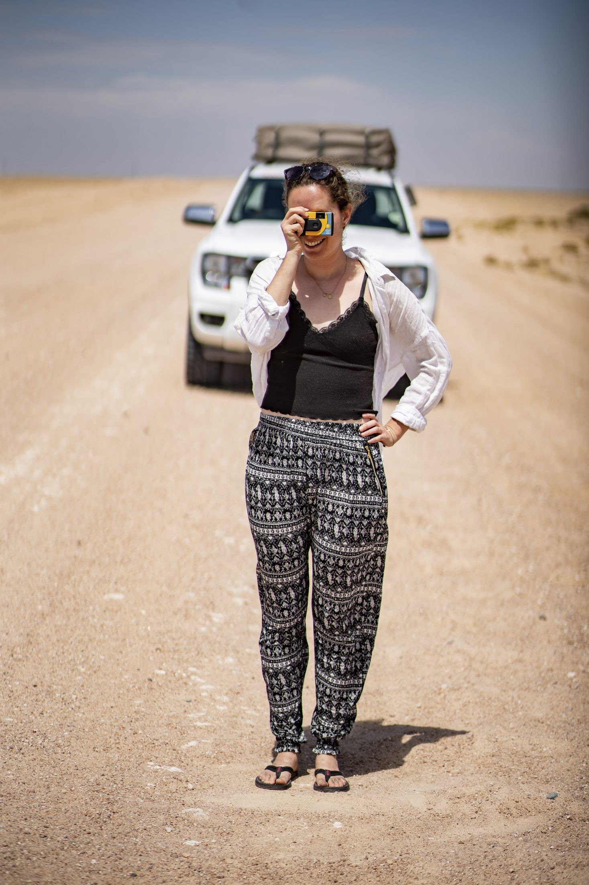

MIRA BENDER
Fotografin in Köln, spezialisiert auf authentische Portraits und dokumentarische Fotografie.
Während meines Wirtschaftspsychologie-Studiums begann ich meine Ausbildung zur Fotografin an der Fotoakademie-Köln, um meinem wachsenden Bedürfnis nach kreativem Ausdruck Raum zu geben. Dort entwickelte ich meine fotografische Sprache und fand meine Leidenschaft für Portrait- und Reportagefotografie, die bis heute den Schwerpunkt meiner Arbeit bilden. Mein Hintergrund in der Wirtschaftspsychologie prägt dabei meinen fotografischen Blick auf menschliche Wahrnehmung, Verhalten und zwischenmenschliche Dynamiken. Meine Bildsprache bewegt sich dabei bewusst zwischen Gegensätzen: Mal knallig und bunt, mal ruhig und klar – immer abhängig von Thema und Kontext.
Gern stelle ich mich individuell auf deine Wünsche ein: Ob Hochzeit, Mode- oder Business-Shooting. Schreib mir gern eine Nachricht, ich freue mich auf Dich!
KONTAKT
miga2002@outlook.de
@mb.fotografiee
+49 178 5454819
AUSBILDUNG
2026 — Diplom Fotografin, Fotoakademie Köln
2025 — Bachelor of Science, Wirtschaftspsychologie, Hochschule Bonn-Rhein-Sieg
2020 — Praktikum bei Kathrin Fotografiert
AUSSTELLUNGEN UND VERÖFFENTLICHUNGEN
2026 — Gruppenausstellung „Eine Menge anderer Werke", Fotoakademie Köln
2026 — SPC Photo Awards, Köln
2025/26 — diverse Veröffentlichungen Veranstaltungsfotografie im KSTA und Weißer Bilderbogen
2024 — Privatausstellung „Im Wandel des Blicks", Köln